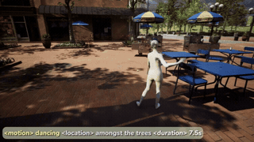

Highlighted work
Highlighted Work
SIGGRAPH Asia 2026Monocular Motion Capture · Arbitrary Rig Topologies · Character Animation
Role: First Author / Project Lead · Affiliation: Tencent
DragonMoCap
Monocular motion capture for arbitrary dragon rig topologies
Zhongfei Qing, Xiaoxiang Zhao, Ling-Hao Chen, Zhongang Cai, Wenjia Wang, Yifan Wu, Qianying Liu, Wei Zeng, Bo Hu, Songnan Li
Dragon characters may be bipedal or quadrupedal, with or without wings, so they cannot be represented by a single SMPL/SMAL-style parametric template. Fixed-dimensional decoders also fail to transfer to previously unseen rigs.
- Problem: Dragon rigs vary substantially in joint count and topology, while conventional fixed-output motion-capture networks assume one predefined skeleton and cannot generalize to unseen bindings.
- Approach: Generate variable-length joint queries from the target rig. Trained on 20 characters and roughly 2.6M animation frames, the model fuses DINOv2 visual features, CLIP bone-name semantics, and skeletal topology in a shared Transformer, with non-parametric retrieval for unseen rigs.
- Result: Generalizes without fine-tuning to six unseen rigs, reaching 13.85 cm MPJPE / 8.63 cm PA-MPJPE at about 30 FPS on one NVIDIA L20; it also helps animators turn reference video into motion quickly for rapid creative validation.
DINOv2CLIPTransformerUE5Arbitrary Topology
Model Training in ProgressWorld Models · Video Understanding & Generation · Game Data
Role: First Author / Project Lead · Affiliation: Tencent
LifeSimWorld
A unified video world model for understanding and generating open-ended life simulation
Public AAA game footage is dominated by combat and navigation, while everyday interactions such as eating, handshakes, conversations, and furniture use are rare. Much of the available footage also contains UI, subtitles, or text overlays and is unsuitable for video-world-model training.
- Problem: Training data must be visually clean and temporally coherent, yet existing footage provides little coverage of rich person–person and person–object interaction and frequently contains unusable visual overlays.
- Approach: Re-engineered a high-fidelity life-simulation game through UE4SS: remove UI, automate camera motion, drive autonomous play with behavior trees, and reject invalid viewpoints, distances, and camera clipping. A separate internet pipeline performs crawling, shot detection, brightness/text filtering, ViPE trajectory estimation, and VLM annotation for AAA footage.
- Result: Curated about 100 hours of life-simulation video covering eating, handshakes, computer use, sitting, dancing, and conversation, plus about 200 hours of UI-free AAA footage dominated by generic locomotion. The two sources support life-interaction post-training and general-dynamics pretraining for a unified Qwen + Wan2.2 understanding-and-generation model.
World ModelsVideo UnderstandingVideo GenerationGame DataQwenWan2.2
ICLR 2027 · Under ReviewWorld Models · Video Evaluation
Role: First Author / Project Lead · Affiliation: Tencent
A hierarchical diagnostic benchmark for compositional consistency in video world models
FVD and LPIPS evaluate one generated video at a time and therefore miss contradictions where different control paths should reach the same state but the model produces different worlds. They also cannot isolate failures in action cancellation, loop revisitation, or multi-path convergence.
- Problem: Existing aggregate quality metrics do not test whether a controllable world model remains consistent when actions are reversed, a location is revisited, or different paths arrive at the same state.
- Approach: Built a deterministic UE5 data engine that samples multiple trajectories from the same initial state and programmatically constructs Inverse, Loop, and Equivalence relations with collision, pose, and pixel validation. GT-anchored metrics test agreement with the real world, while Self-Consistency tests whether the model agrees with itself across paths.
- Result: Produced relation- and horizon-resolved profiles for five model families and 400 standardized rollouts. On 448 Inverse trajectory groups, measured 10–40-step drift of +0.221 LPIPS and −3.58 dB PSNR, and released 1,371 trajectories, model adapters, and a bootstrap-based evaluation toolkit.
World ModelsVideo EvaluationUE5Compositional Consistency
Project page ↗

View project ↗
SIGGRAPH Asia 2023
Human Motion · Generative AI
Role: First Author / Project Lead · Affiliation: SenseTime Research
Synthesizing Infinite and Controllable Character Animation from Long Text
Zhongfei Qing, Zhongang Cai, Zhitao Yang, and Lei Yang
A hierarchical language-planning and local-motion generation framework that converts long narratives into executable motion plans, then autoregressively synthesizes coherent, trajectory-controllable character animation without a fixed sequence horizon.
- Problem: Fixed-window text-to-motion models cannot continuously map long narratives into semantically coherent, trajectory-controllable performance; longer sequences accumulate semantic drift, repeated actions, and abrupt transitions.
- Approach: Built a hierarchical high-level language planning + local motion generation framework that parses stories into executable motion plans and autoregressively extends them using historical context, boundary transitions, and trajectory constraints.
- Result: Achieved end-to-end generation from long stories to continuous character animation with narrative-driven action and trajectory control; published as first author at SIGGRAPH Asia 2023.
ICCV 2023WAIC SenseTime Showcase · HMR · Synthetic Data
Role: Core Member · Affiliation: SenseTime Research
SynBody
Synthetic Dataset with Layered Human Models for 3D Human Perception and Modeling
A 1.2M-image layered synthetic-human dataset for SMPL/SMPL-X estimation and Human NeRF. I led UE5 procedural scene generation and quality control across character motion and placement, camera planning, lighting, collision, and visibility.
- Problem: Real 3D human data is costly and difficult to scale, while layered clothing–body annotations are particularly scarce, limiting both human pose/shape estimation and neural rendering.
- Approach: Designed clothed parametric humans and a layered human representation. I led UE5 procedural scene generation and quality control, jointly planning character motions and placement, camera angles, and lighting, while collision and visibility checks prevent human–human, human–object, and camera occlusion failures.
- Result: Released 1.2M images spanning 10,000 human models, 1,187 motions, and multiple views with precise 3D annotations; substantially improved SMPL/SMPL-X estimation and provided high-quality training data for Human NeRF.
UE53D HumanSynthetic Data
Project page ↗
Multi-platform Deployment · WAIC SenseTime ShowcaseProduction Digital Human
Role: Core Member · Affiliation: SenseTime Research
AI Digital Human Livestreaming
Speech- and text-driven gesture generation for autonomous virtual presenters
A production digital-human livestreaming product deployed on Bilibili, Kuaishou, and Douyin. It operates 24/7, reads and answers comments, presents products, and triggers natural gestures for semantics such as greetings, prices, and heart signs.
- Problem: A production digital human must read and answer live comments around the clock, present products and sell them, and pair semantics such as greetings, prices, and heart gestures with natural body motion without long-run repetition, discontinuity, or accumulated failure.
- Approach: Built an end-to-end loop from comment understanding and response/sales-script generation to co-speech motion and livestream scheduling. Text, speech, and keyword-triggered gesture control are combined with long-sequence transitions, kinematic constraints, and fault recovery.
- Result: Deployed on Bilibili, Kuaishou, and Douyin for 24-hour livestreaming, real-time comment interaction, product presentation, and commerce; also demonstrated at the SenseTime booth at WAIC.
Gesture GenerationSpeechAnimation
Watch demo ↗
CVPR 2024Embodied Agents
Role: First Author / Project Lead · Affiliation: SenseTime Research
Digital Life Project
Autonomous 3D Characters with Social Intelligence
Zhongang Cai*, Jianping Jiang*, Zhongfei Qing*, Xinying Guo*, Mingyuan Zhang*, et al.
* Equal contribution
An embodied multi-agent system that compiles high-level LLM intentions into continuous 3D behavior. I led the motion-intelligence layer spanning skill selection, navigation, IK, state machines, transition generation, and multi-character coordination.
- Problem: LLMs produce discrete high-level intentions but cannot directly control continuous 3D motion; multi-character social behavior must also satisfy collision avoidance, gaze, motion transitions, and interruptible real-time response.
- Approach: Led the motion-intelligence layer and designed a hierarchical intention–skill–motion-parameter–animation stack. Navigation, IK, state machines, and transition generation compile environment state and social relationships into executable behavior.
- Result: Enabled multiple agents to continuously execute observable, interruptible, and recoverable social behavior, closing the loop from LLM decisions to 3D character animation; published at CVPR 2024.
LLM3D CharactersInteraction
2025Shipped
Role: Core Member · Affiliation: Tencent
QQ Speed AI Pet Motion
Cross-skeleton animation retargeting and secondary motion
A shipped real-time animation pipeline for the QQ Speed AI pet, combining heterogeneous-rig retargeting, kinematic correction, PBD, collision handling, and spring-based feather and tail dynamics.
- Problem: Pet characters differ in bone proportions, hierarchy, and local coordinate frames, so directly reusing dance motion causes severe pose distortion; feathers and tails must additionally remain natural, collision-aware, and real-time.
- Approach: Combined skeleton-semantic mapping, local-frame correction, and kinematic constraints for cross-rig retargeting. Non-rigid components are modeled as collision-constrained dynamic chains solved with PBD, spring models, and real-time collision handling.
- Result: Integrated retargeting, pose correction, and secondary dynamics into a configurable real-time pipeline that reliably produces dance, feather, and tail motion for the QQ Speed AI pet shipped in 2025, serving a product with millions of monthly active users.
RetargetingPBDUnreal Engine
OngoingMotion Capture
Role: Project Lead · Affiliation: Tencent
Monster Hunter Video Motion Capture
Multi-person motion reconstruction for rapid game prototyping
A video-to-animation system for difficult two-person interactions, using Diffusion + ControlNet to refine initial HMR estimates and a physics engine to remove jitter, foot sliding, and body interpenetration for rapid game prototyping.
- Problem: Long occlusion, close body contact, and identity swaps make monocular reconstruction of two-person interactions severely underconstrained, producing depth drift, missing invisible joints, jitter, foot sliding, and interpenetration that do not meet production needs.
- Approach: Designed a Diffusion Model + ControlNet refinement network conditioned on initial HMR estimates to complete occluded motion and remove jitter, followed by physics-engine optimization over bone lengths, joint limits, ground contact, and collision constraints.
- Result: Reliably recovers identity, relative pose, and continuous motion in complex interactions, converting ordinary video into animation data that can directly drive game characters for low-cost rapid prototyping.
GVHMRTrackingPhysics
Work in progressControllable Video Generation
Role: First Author / Project Lead · Affiliation: Tencent
Multi-character Video Generation
Consistent character appearance for dance and narrative video
Addresses Attribute Leakage, where clothing, hair, and facial features propagate incorrectly across interacting characters. The proposed GVT Block encodes skeletal topology directly in diffusion attention to preserve identity and appearance.
- Problem: A common multi-character defect is incorrect cross-character propagation of appearance: clothing, hair, or facial features leak from one subject to another, causing misplaced garments, color contamination, face swaps, and identity confusion. We identify this general failure mode as Attribute Leakage.
- Approach: Formulated identity preservation as manifold-constrained regularization and proposed the GVT Block: Geodesic Voronoi Cells anchored at skeletal joints, topology-aware 3D-RoPE encoding character, body part, and geodesic distance, and a lightweight Gating Network that modulates attention logits to suppress token-level interference.
- Result: Overcame the capacity limits of character-specific LoRAs and the sensitivity of hard masks to tracking noise, preserving identity and appearance under high interaction, out-of-distribution poses, and noisy conditions; ablations validate all three topology-aware components.
GVT BlockTopology-aware 3D-RoPEGating Network
GAME
AIGC
ProductionAIGC Pipeline
Role: Core Member · Affiliation: Tencent
Game Production AIGC Pipeline
Deploying generative models for efficient game-art production
Built a model adaptation and serving platform that translates heterogeneous generative research models into stable game-art production capabilities across texture, image, pose, and facial domains.
- Inverse graphics: Formulated low-LOD material recovery as differentiable-rendering optimization, automatically reconstructing UV-island content and repairing sub-pixel seam artifacts.
- Model adaptation: Built task-specific fine-tuning and inference pipelines for texture super-resolution and Flux/Qwen-based character style and pose transfer.
- Productionization: Established model benchmarking, quality gates, service integration, and automated batch processing, including a LivePortrait-based facial-animation service.
Diff. RenderingSuper-resolutionDeployment